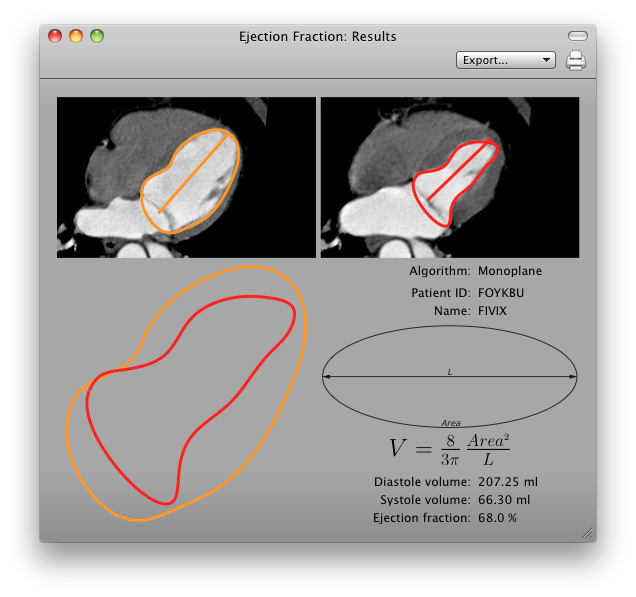

The user interface is split in three parts: algorithm choice, ROI tracking and results.
Algorithms
The algorithm determines how the cardiac volume is computed from the ROIs you specify. The following algorithms are currently available:
- Monoplane
The cardiac volume is computed as the volume of an ellipsoid of which you specify the long axis area and length.
- Biplane
The cardiac volume is computed as the volume of an ellipsoid of which you specify the horizontal long axis area, vertical long axis area and length.
- Hemi-ellipse
The cardiac volume is computed as the volume of a half-ellipsoid half-cylinder of which you specify the short axis area and length.
- Simpson
The cardiac volume is computed as the volume of a half-ellipsoid half-cylinder of which you specify the base short axis area, middle short axis area and length.
- Teichholz
The cardiac volume is computed from the specified length.
ROIs
Once you have selected the algorithm, the interface shows you a list of ROIs required by the algorithm you picked.
When a ROI is recognized as one from which the diastole or systole volumes are computed, the plugin sets it to be drawn in the color linked to either systole or diastole. You can pick your preferred colors by clicking on the color buttons.
By clicking on the ROI buttons, the ideal ROI tool is selected and the interface waits for you to create a ROI. This is shown on the interface as an arrow shown on the left side of the button.
When you create a new ROI, this new ROI is automatically used for the role described by the button. An assigned role is shown on the interface as a check mark on the left side of the button. On the viewer, the ROI
If you wish to assign a role to an already existing ROI, right-click on it and select the role on the Enection Fraction submenu.
Results
Once all ROIs have been specified, the resulting ejection fraction value is shown on the window. If you want to obtain a more detailed view on the result, click on the Details button.

The export and print buttons allow you to save the image as a DICOM file (or node), a TIFF, a PDF. Notice that the obtained image will have the same size as the window at the moment you do the export.